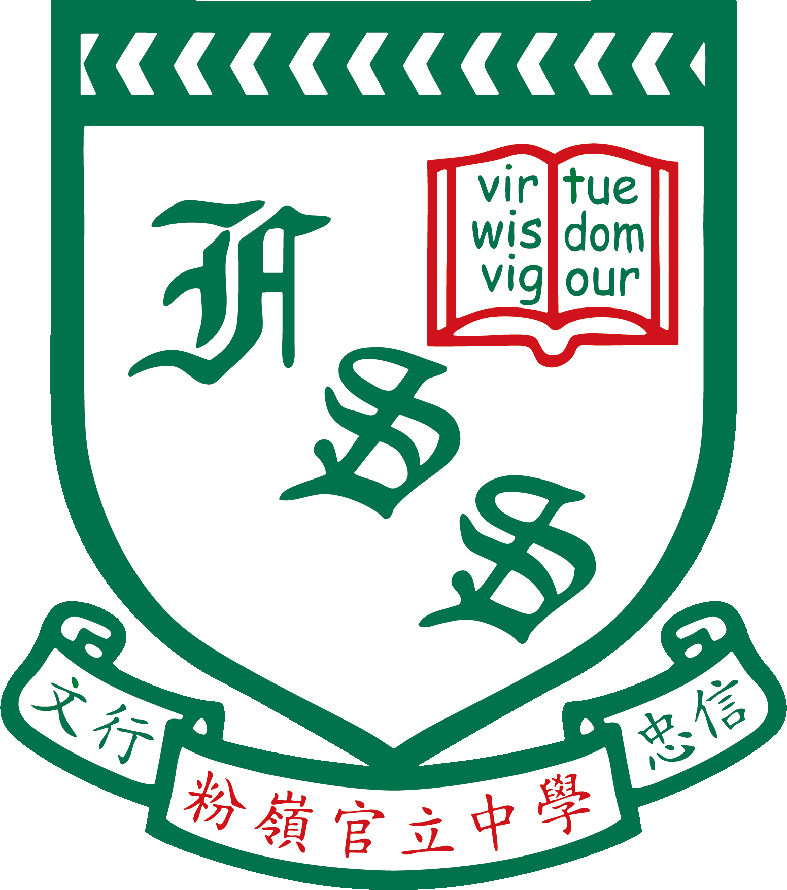

嫦娥三號、嫦娥四號
相機指向系統：安裝於着陸器，協助拍攝月面圖像及監察月球車運作。理大團隊亦參與着陸區地形測繪與地貌分析，支援着陸點評估。

粉嶺官立中學
設計與應用科技科 · DAT
教學資源 · 靜態網頁
從「兩彈一星」到載人航天、探月、空間站與深空探測——認識國家航天發展脈絡，以及香港高等院校在其中的科研參與。
下列年份與事件依據公開報道整理，供課堂簡介使用。
國防部第五研究院成立，標誌中國航天事業正式起步。其後逐步實現原子彈（1964）、氫彈（1967）及人造衛星（1970）等重大突破，奠定自主航天能力。
1970 年 4 月 24 日，長征一號運載火箭成功發射東方紅一號，中國成為世界上第五個能獨立研制並發射人造衛星的國家。
1999 年神舟一號無人飛行試驗成功；2003 年 10 月 15 日，航天員楊利偉乘神舟五號進入太空，中國成為世界上第三個獨立掌握載人航天技術的國家。
2007 年嫦娥一號環月探測；2013 年嫦娥三號實現地外天體軟着陸；2019 年嫦娥四號完成人類首次月背軟着陸與巡視；2020 年嫦娥五號完成月面採樣返回；2024 年嫦娥六號完成人類首次月背採樣返回。
2011 年天宮一號發射並完成交會對接試驗。其後問天、夢天實驗艙相繼入軌，2022 年中國空間站「T」字基本構型在軌組裝完成，持續開展科學實驗與應用。
2020 年 7 月 23 日天問一號發射；2021 年 5 月 15 日着陸器成功着陸火星烏托邦平原南部預選着陸區，並開展環繞、着陸與巡視探測。
2020 年 7 月 31 日，北斗三號全球衛星導航系統正式開通服務，中國成為世界上第三個獨立擁有全球衛星導航系統的國家，為交通、測繪、防災與民生應用提供自主定位與授時能力。
香港理工大學（理大）與中國空間技術研究院等機構合作，多次為國家探月、探火任務研製太空儀器及提供着陸區地形分析支援。
相機指向系統：安裝於着陸器，協助拍攝月面圖像及監察月球車運作。理大團隊亦參與着陸區地形測繪與地貌分析，支援着陸點評估。
表取採樣執行裝置：包括採樣器、高溫近攝相機及初級封裝系統等，支援月面（含月背）全自動表土採樣與封裝，配合國家「採樣返回」任務目標。
落火狀態監視相機：用於監察火星車着陸過程。理大相關團隊亦以地形地貌分析技術，支援着陸區安全性評估與特徵識別。
理大在工業中心等設施完成多項航天件研製與測試，體現香港高校在精密工程、測量與太空儀器方面的實力，亦為青年提供認識國家航天事業的實例。
中國航天強調和平利用外空，相關技術與數據亦服務全球社會。
透過載人航天、空間站與深空探測，拓展人類對地外環境的認識，並以公開、可控的方式開展科學實驗與技術試驗。
北斗系統為全球用戶提供定位、導航與授時服務，支援交通運輸、精準農業、應急救援與智能城市等應用。
氣象、資源、海洋與環境監測等衛星，有助天氣預報、災害評估、資源管理與氣候研究，服務社會可持續發展。
探月、探火及空間科學任務產生的影像與樣本數據，可促進跨地區科研交流；部分任務亦與國際夥伴在載荷或數據層面合作。
紀念與展望
自 1997 年 7 月 1 日香港回歸祖國以來，特區在「一國兩制」下持續發展。面向 2027 年回歸三十周年，校園可藉航天科技成就，認識國家科技進步，亦理解香港院校與青年如何在精密工程、創新科技等領域參與國家發展。
願同學以嚴謹態度學習科學知識，培養家國情懷與探索精神，在各自崗位貢獻社會。